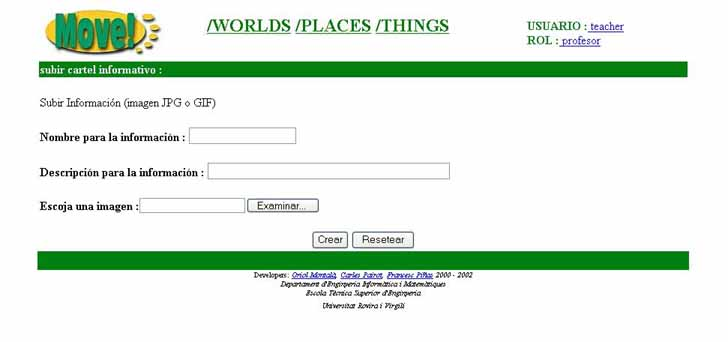

3.14.1 Subir informaci�n
Para poder crear una Thing de tipo information deberemos clicar sobre el icono que aparece en la barra de tools activas y a continuaci�n aparecer� la siguiente pantalla:

Para poder crear la Thing es necesario rellenar los siguientes campos:
- Nombre para la informaci�n: nombre para el cartel informativo
- Descripci�n de la informaci�n: descripci�n del cartel informativo
- Escoja una imagen: fichero que contendr� la imagen de la informaci�n(fichero JPG o GIF)
Una vez introducidos los datos en el peque�o formulario tendremos que pulsar el bot�n  para
que la nueva Thing sea creada y subida al servidor de MOVE!.
para
que la nueva Thing sea creada y subida al servidor de MOVE!.
Si todo ha ido bien seremos redirigidos a la pantalla donde se muestra el listado de todas las Things que hay en el Place, y podremos observar como la Thing que hemos creado
ya aparece entre ellas.